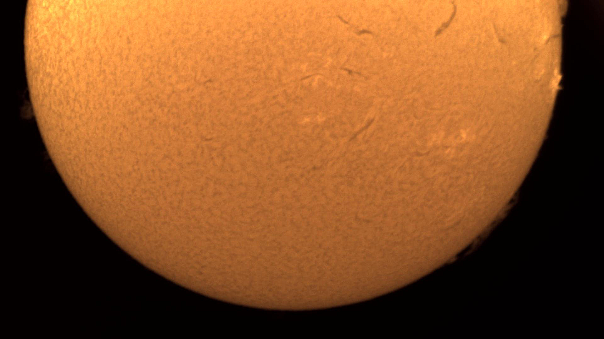
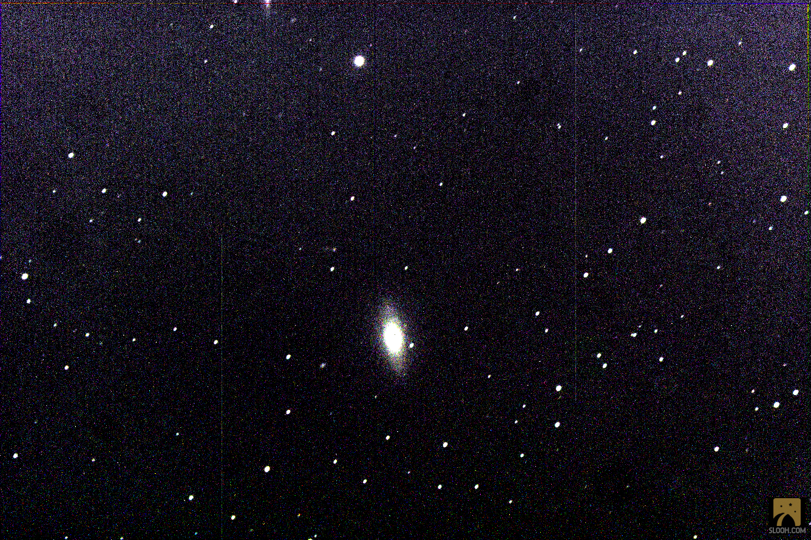
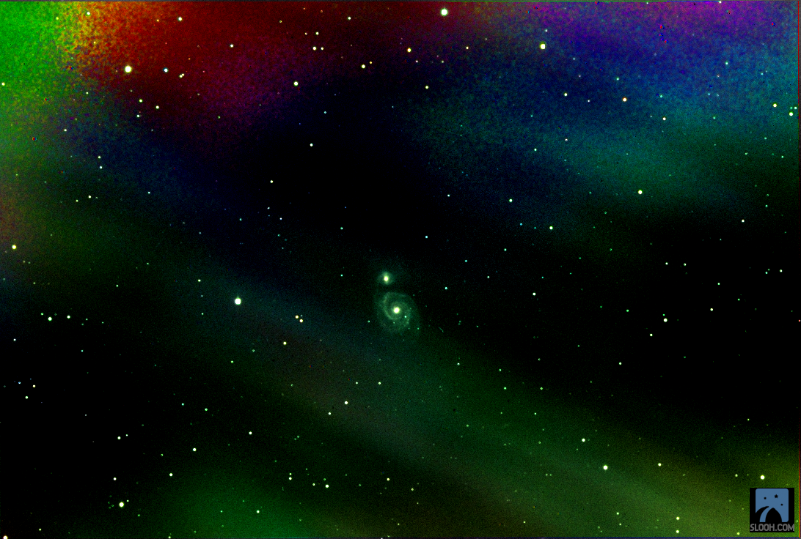

Jupiter, the fifth celestial body from the Sun, reigns as the largest entity in our solar system, surpassing the
combined mass of all other planets twofold. Its distinguishing features, the stripes and swirling patterns, consist
of chilly, gusty clouds composed of ammonia and water, suspended within a gaseous envelope primarily made up of
hydrogen and helium. Among these formations, the renowned Great Red Spot commands attention—a colossal tempest
dwarfing Earth, persisting for centuries.
The planet draws its title from the ancient Roman deity, the monarch of
gods, Jupiter.
“Messier 51 (the Whirlpool Galaxy) - NASA Science.” NASA, NASA,
science.nasa.gov/mission/hubble/science/explore-the-night-sky/hubble-messier-catalog/messier-51/. Accessed 24 Apr.
2024.
Mark, and Steve Ringwood. “Observe a Fine Trio of Planetary Nebulae in Cygnus.” Astronomy Now, 4
Sept. 2023,
astronomynow.com/2023/09/04/observe-a-fine-trio-of-planetary-nebulae-in-cygnus/.
Sun - NASA Science.” NASA, NASA, science.nasa.gov/sun/. Accessed 24 Apr. 2024.
The Sun

FEB 19, 2024 16:03 UTC • CANARY FIVE
Since time immemorial, the Sun has been a source of fascination, and the source of life for use as humans. It occupies a central place in the lore and spiritual
practices across diverse civilizations, from the pyramid builders of Egypt to the Aztecs of Mexico, from the varied
indigenous peoples of the Americas to the dynasties of China, among countless others.
Music creators of every era have found inspiration under its rays, composing melodies that capture its essence. Consider
the melodies of The Beatles with their cheerful tune "Here Comes the Sun," or the contemplative vibe of "Ain't No
Sunshine" by Bill Withers. Katrina and the Waves gave us the upbeat "Walking on Sunshine," while Natasha Bedingfield
offered an uplifting "Pocketful of Sunshine," and the Fifth Dimension invited us to "Let the Sunshine In."
The Sun's massive gravitational force is the linchpin of our solar system, orchestrating a cosmic ballet of planets and
particles. It's the engine behind our terrestrial cycles and weather patterns, the rhythm of the seas, and the dance of
the auroras. Despite its singular importance to our existence, it is but one of countless similar stars dotting the
expanse of our Milky Way.
In the tapestry of human culture, the Sun is known by many monikers. In Latin, it's called “sol,” a term that has seeded
the language we use for all that relates to our star..
Fetus NebulaFEB 29, 2024 06:10 UTC • CANARY FOUR
The Foetus or Fetus Nebula, known scientifically as NGC 7008, gets its name from its distinct shape observed in advanced
deep-space photography. Located more than 12 degrees east and a touch north from the Blinking Planetary, it boasts a
brightness level of magnitude +10.7. It's accessible for observation with a 150mm telescope, which can discern its
smooth, elongated form. For those who use larger telescopes, like a 250-300mm, especially with an O-III filter and
higher magnification, one might notice subtle variegation on its surface. This nebula is a planetary nebula, which is a
misnomer dating back to the time when telescopes were less powerful and astronomers mistook these objects for planets.
In reality, planetary nebulas are the remains of stars similar to our Sun that have exhausted their nuclear fuel and
expelled their outer layers, leaving behind a glowing shell of gas and dust.
Bennet 17 NGC 1380

FEB 14, 2024 01:17 UTC • CHILE ONE
Jack Bennett, a South African astronomer, left an indelible mark on the field with his diligent stargazing. His backyard
observations with a simple 5-inch telescope led to the discovery of two comets and an unprecedented visual discovery of
a supernova in NGC 5236 (M83). Born into a family with British and Tasmanian roots in 1914, Bennett became a celebrated
member and eventually the president of the Astronomical Society of Southern Africa. His contributions to astronomy were
recognized with awards and an honorary science degree.
Notably, Bennett's name graces one of the celestial objects he cataloged—Bennett 17, better known as NGC 1380, a
lenticular galaxy in the constellation Fornax. This object is part of his comprehensive Bennett Catalogue, which
includes a host of deep-sky objects that resemble comets, a list that became a crucial reference for southern hemisphere
astronomers.
Bennett's influence reached far and wide, inspiring Daniel Verschatse, an astrophotographer from Belgium. Moved by
Bennett's discovery of the brilliant Comet Bennett in 1969, Verschatse embarked on a journey to capture the celestial
bodies from the Bennett Catalogue. His work not only celebrates the comet-like objects that Bennett once observed but
also honors the legacy of the man who brought attention to the rich tapestry of the southern night sky, including the
enigmatic galaxy NGC 1380, Bennett's own numbered discovery.
Whirpool Galaxy

FEB 19, 2024 23:12 UTC • CANARY TWO
The elegant, winding arms of the spectacular spiral galaxy M51 resemble a vast spiral staircase in space. However, they
consist of lengthy lanes adorned with stars and gas mingled with dust, characteristic of grand-design spiral galaxies.
Within M51, also known as the Whirlpool galaxy, these arms serve as vibrant hubs for star formation, compressing
hydrogen gas to give birth to new stars.
Astronomers speculate that the prominence of the Whirlpool’s arms may be influenced by a close encounter with NGC 5195,
a small, yellowish galaxy at the edge of one arm. This compact galaxy appears to tug on the arm, triggering star
formation through tidal forces. Hubble's imagery reveals NGC 5195 passing behind M51, an ongoing cosmic interaction
spanning millions of years.
In Hubble’s depiction of M51, red hues represent infrared light and hydrogen in star-forming regions, while blue tones
indicate hot, young stars, and golden shades represent older stellar populations.
First cataloged by Charles Messier in 1773, M51 lies 31 million light-years away in the Canes Venatici constellation.
With an apparent magnitude of 8.4, it's easily observed with a small telescope, especially in May. Its face-on
perspective and proximity to Earth offer astronomers a unique opportunity to study star formation processes in a
quintessential spiral galaxy.